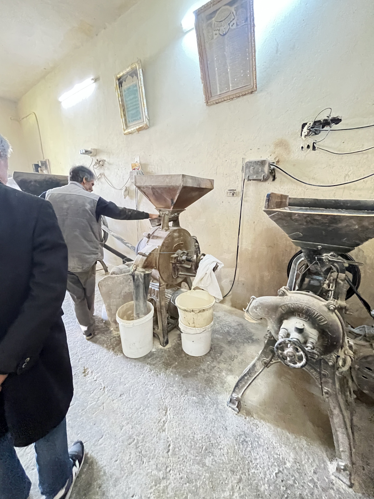
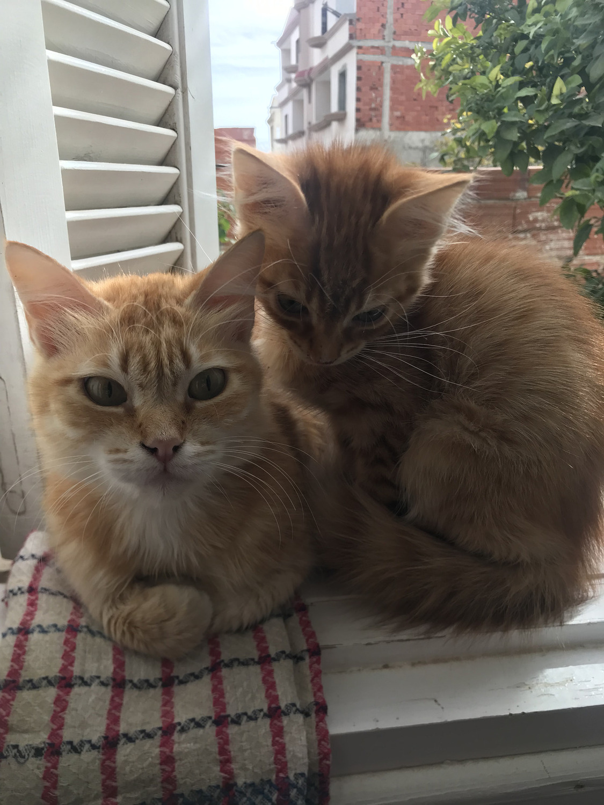
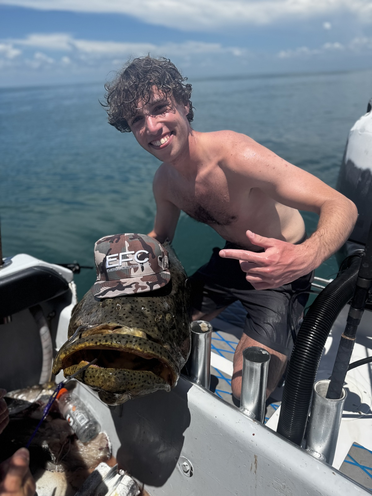
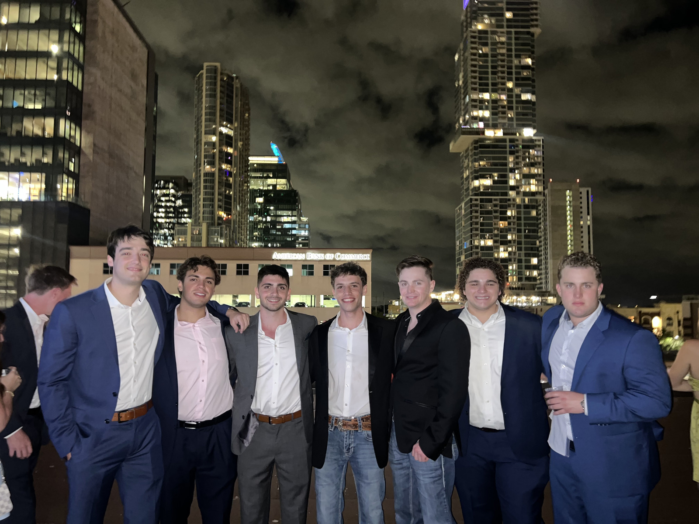

From an olive grove in Tunisia to building the systems that keep planes safe.
Some people learn to code from a textbook. I learned it the same way I learned to press oil — by watching closely, getting my hands in it, and figuring out what the process was actually for.
keep going
chapter one
The grove
I grew up in Tunisia, the son of Houda and Taoufik, one of five — alongside Asma, Oussama, and Amine. Before I ever touched a keyboard, I was taught something slower: how to read an olive tree, when to harvest, how to turn what the grove gave us into oil.
My grandparents' olive grove is where I first learned that good things come from patience and process — you don't rush a harvest, and you don't rush a press. That lesson followed me into every room I've walked into since.

the press, Tunisia

Houda and Taoufik, in the grove
chapter two
The spark
Everything changed when I got my hands on a computer. I taught myself to take it apart, break it, fix it, understand it — the same instinct that made me good in the grove made me good here too.
But it didn't feel like enough to just be good at it myself. I believed computer science could be fundamental to empowering my community — so in 2016, at fifteen, I co-founded CodeInn, a youth coding initiative in Sousse. Over three years it expanded into three regions and taught 300+ students the fundamentals of programming through self-directed clubs and workshops.
Those years also pulled me onto bigger stages — Yale Young Global Scholars in 2018, then LaunchX at the University of Michigan in 2019, which went virtual partway through. Both were early proof that the instinct I'd built in Sousse held up outside it. If you came up through either program too, I'd genuinely love to hear from you — reach out.
"I didn't want to be the only one in the room who understood the machine."
chapter three
Departure
At eighteen, I left Tunisia for South Africa to join the African Leadership Academy, a two-year program that reshaped how I think — ethical entrepreneurship, leadership, African philosophy, African studies. It's where I stopped thinking of technology as a tool and started thinking of it as a responsibility.
It's also where I first heard about TCU — a thread that would end up pulling me across another ocean.
ALA graduation
chapter four
Building
From ALA, I led a team on Everse, an ALA-funded project bringing affordable tech solutions to remote African artists — 30+ artists across rural regions. That led me to TCU, where I've spent years across departments: admissions, IT support, and four years with TCU football, where I picked up two bowl rings along the way.
Somewhere in there, I got an early front-row seat to the AI boom through Teralogix, a summer internship at an early-stage startup in Naples, Florida, helping build a proof of concept for Cristos — an AI-driven workflow platform built with Node.js, Python, and LangGraph. It's since shut down — but it's where I first built with the tools I now use every day.
Today, I'm a computer information technology graduate of TCU, working at Brazos Safety Systems in Fort Worth — most recently building a weather-integration API for their flight data monitoring platform, using real-time METAR data to sharpen flight safety analysis. Different industry, same instinct: take something raw and complicated, and turn it into something that works reliably for people who depend on it.
This fall, the instinct is turning inward for a while — 2026 is the year I step back from industry to focus on research and pure academia.
sep – dec 2025 fort worth, tx
Brazos Safety Systems
Student Contributor
Built a weather-integration API for the FDM platform using real-time METAR data, delivered as part of an agile analytics team.
summer 2025 naples, fl
Teralogix
Software Engineering Intern
Proof of concept for Cristos, an AI-driven workflow platform (Node.js, Python, LangGraph). Startup has since closed.
4 years fort worth, tx
TCU Football
Operations / Support
Four seasons with the program.
2 bowl rings
jan 2023 – apr 2025 fort worth, tx
TCU IT
Intern
Resolved 80+ IT issues each semester for students and staff; handled installs, updates, and security compliance.
nov 2021 – apr 2022 johannesburg
Everse
Team Leader
Led an ALA-funded project bringing affordable tech to 30+ remote African artists.

TCU admissions, after a good week
chapter five
Off the clock
TCU gave me more than a career start — it gave me Delta Tau Delta, a fraternity I've been genuinely proud to be part of. Outside of work, you'll usually find me on a pickleball court, working through something on electric guitar, or carving stone — still, apparently, someone who likes taking a raw material and turning it into something with shape.
◆Delta Tau Delta
●Pickleball
▲Electric guitar
■Stone carving
Delta Tau Delta

DTD, downtown
appendix
Photos
Still open: guitar and stone carving. Send those whenever you have them.